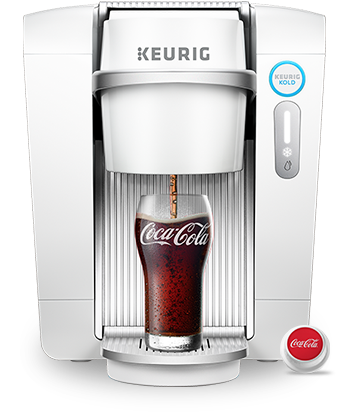
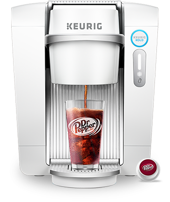
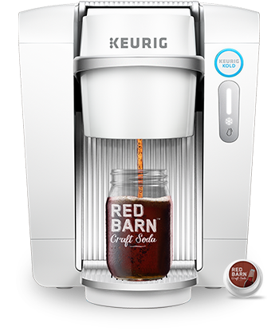
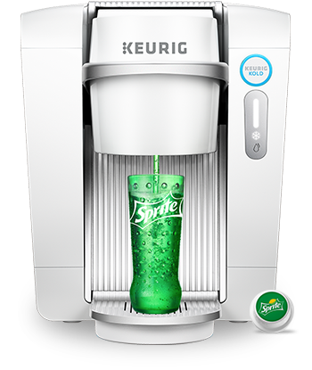
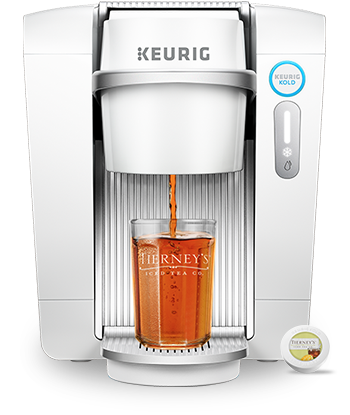
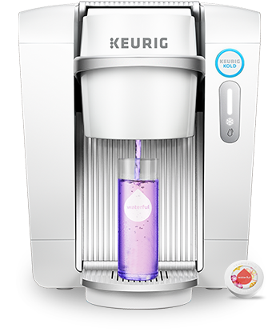
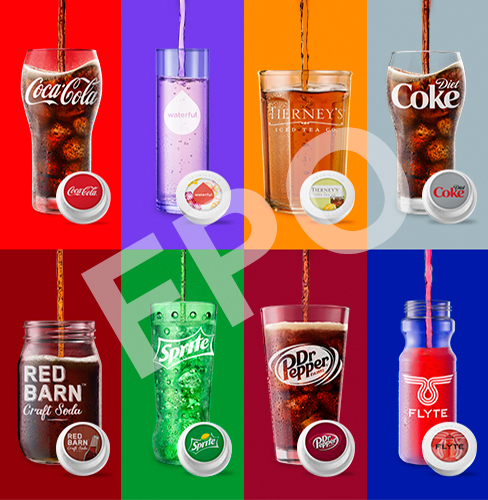
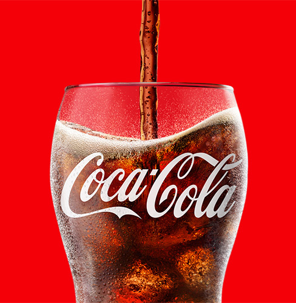
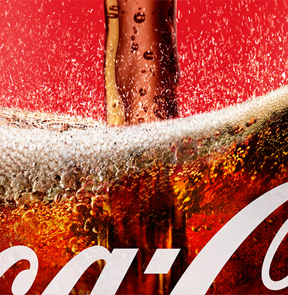

Be the first.
Change the game.
Be the first to experience the new KEURIG® KOLD™. Make a Coca-Cola®. Make a Sprite®. Make ice-cold craft sodas, sports drinks, sparkling waters, iced teas, and more, at the push of a button.



Be the first to experience KEURIG® KOLD™.
Join the Beta Tasters: a select few who get exclusive first access to KEURIG® KOLD™—and the opportunity to help us change the future of refreshment.